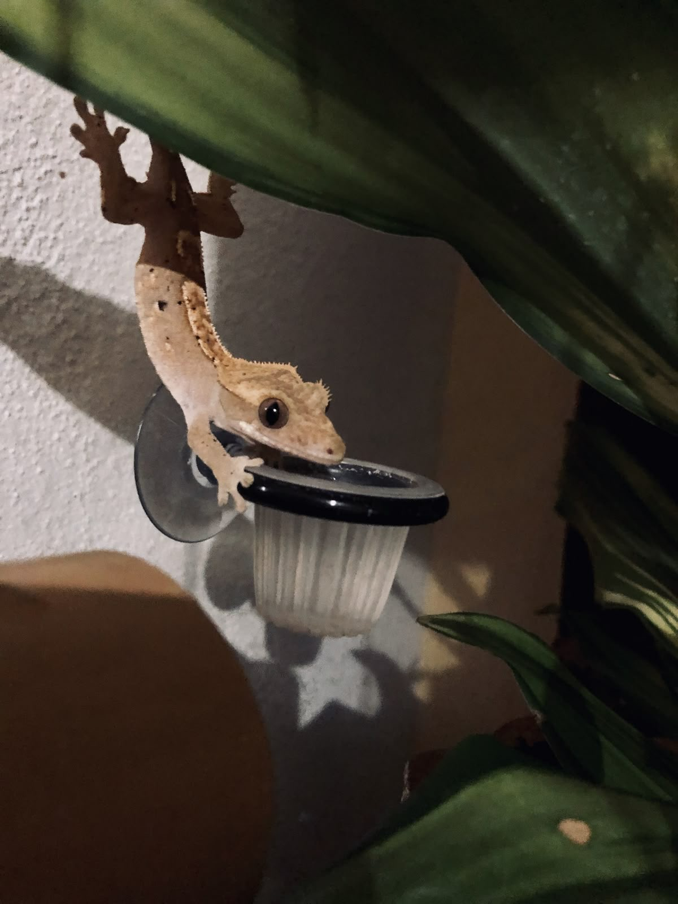

Загальна інформація
Бананоїд ресничний (Correlophus ciliatus) — це нічна деревна ящірка з родини геконових. Він походить з тропічних лісів Нової Каледонії, де живе на деревах і кущах.
- Довжина тіла: 18–25 см
- Вага: 35–50 г
- Тривалість життя: 15–20 років
- Активність: переважно вночі
- Характер: спокійний, неагресивнийХарактер: спокійний, неагресивний
Завдяки присоскам на лапках бананоїд легко пересувається по вертикальних поверхнях.
Утримання в домашніх умовах
Бананоїд ресничний вважається однією з найкращих рептилій для початківців. Йому не потрібен надто складний догляд, а також він рідко проявляє агресію.
Для комфортного життя йому потрібен вертикальний тераріум, стабільна вологість, помірне тепло та схованки. Вдень бананоїд зазвичай відпочиває, а активним стає ввечері.
Харчування
Основу раціону складають спеціальні готові суміші для геконів, а також живий корм.
- Фруктові пюре для геконів
- Банан, манго, папая
- Сверчки
- Таргани
- Добавки з кальцієм
Важливо дотримуватись балансу та не перегодовувати тваринку.
Цікаві факти
- Бананоїди можуть скидати хвіст, але він більше не відростає
- Вони не мають повік і зволожують очі язиком
- Назву отримали через любов до фруктів
- Можуть змінювати відтінок шкіри залежно від настрою
- Довгий час вважались вимерлим видом